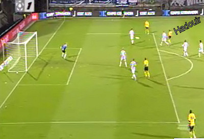

Prima kans voor Cissé. Zijn schot belandt op de lat.

Prima schot van Hadouir maar het levert niks op. Roda is de ploeg
met het meeste balbezit maar het rendement blijft uit.
Castro ziet een vrije trap van Boutahar te laat over de muur komen en
blundert vervolgens opzichtig: 1-0, Boutahar, (27').
Roda ontsnapt aan een nieuwe tegentreffer.
Alweer een ontsnapping middels een save van Vormer.
Invaller Zijler soleert door de Roda-defensie waarna Boutahar simpel
zijn tweede kan intikken: 2-0, (73').
Willem speelt niet beter maar wèl efficiënter dan Roda.
Invaller Matondo redt de eer.
Vanaf grote afstand scoort de spits een sublieme goal: 2-1, (87).
In de extra tijd scoort invaller Janssen nèt niet de gelijkmaker.